Existen diferentes tipos de descubrimiento del contenido web:
Manual / Automatico / OSINT
DESCUBRIMIENTO MANUAL
Verificar el codigo fuente del sitio
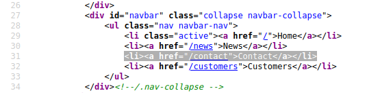
Developer Tools - Inspector
Ver y editar contenido del codigo fuente del Frontend para poder visualizar caracteristicas ocultas
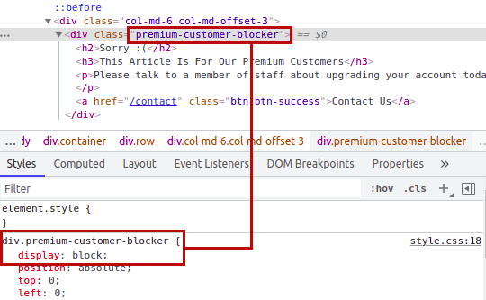
Developer Tools - Debugger
Este panel de las herramientas para desarrolladores está diseñado para depurar JavaScript y, de nuevo, es una función excelente para desarrolladores web que desean averiguar por qué algo no funciona. Sin embargo, como evaluadores de penetración, nos permite analizar a fondo el código JavaScript. En Firefox y Safari, esta función se llama Depurador, pero en Google Chrome, Fuentes.
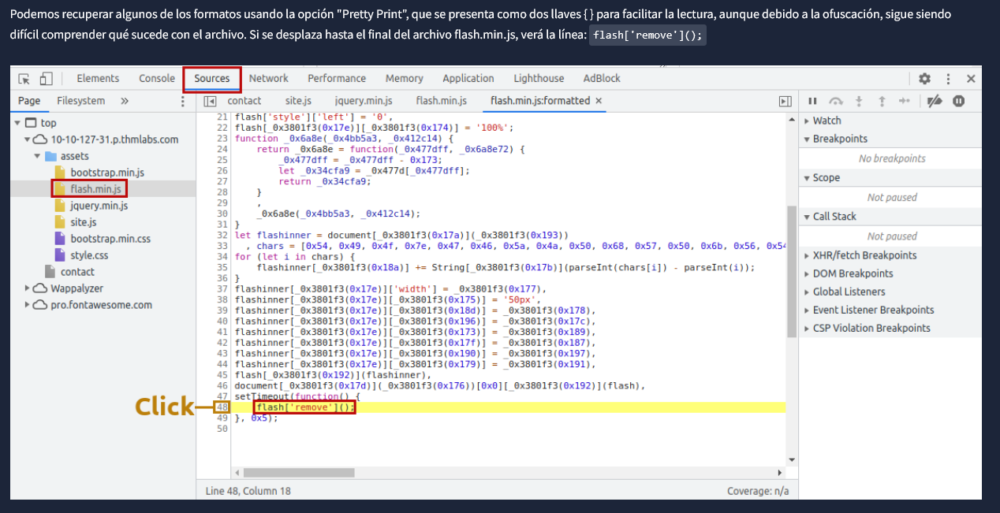
Developer Tools - Network
La pestaña de red de las herramientas para desarrolladores permite realizar un seguimiento de cada solicitud externa que realiza una página web. Si hace clic en la pestaña de red y actualiza la página, verá todos los archivos que solicita.
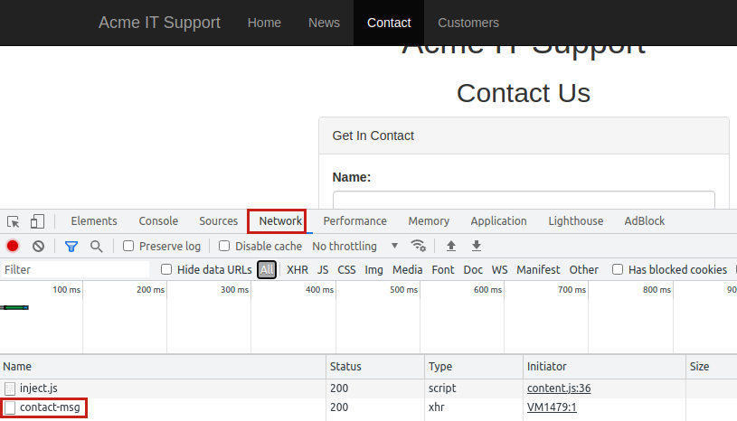
Web Framework
Validar el portal del framework del sitio web
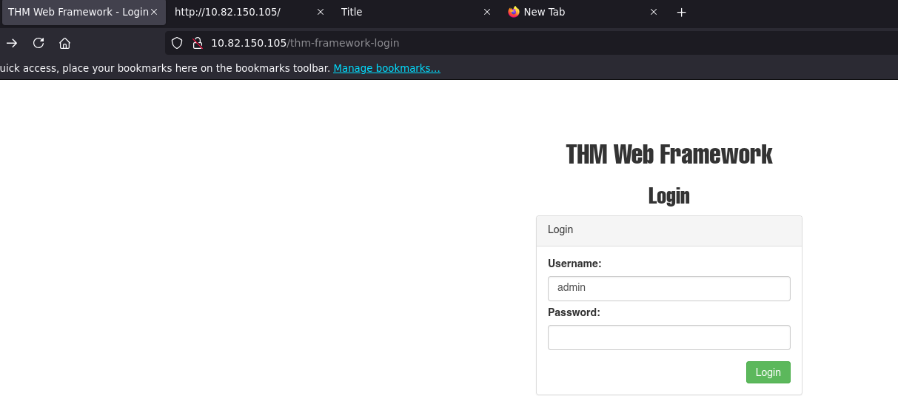
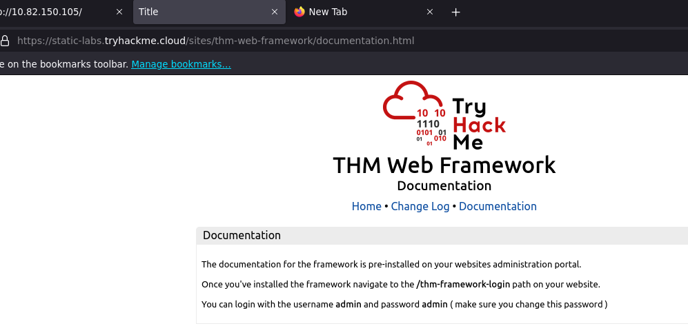
}DESCUBRIMIENTO OSINT
Google Hacking or Google Dorks (Dorking)
También hay recursos externos disponibles que pueden ayudar a descubrir información sobre su sitio web de destino; estos recursos a menudo se denominan OSINT o (Inteligencia de código abierto), ya que son herramientas disponibles gratuitamente que recopilan información:
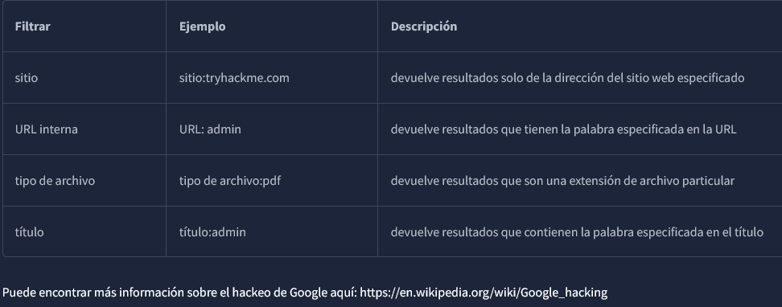
WAPPALYZER
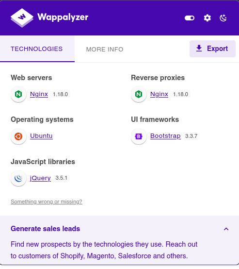
GIT & GITHUB
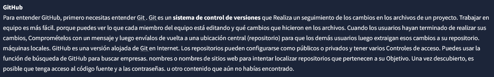
S3 Bucket
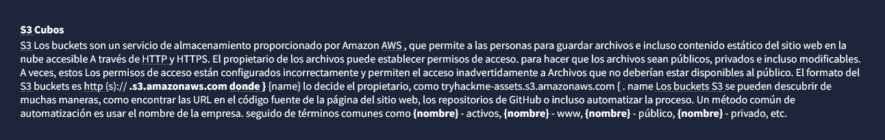
DESCUBRIMIENTO AUTOMATICO
El descubrimiento automatizado consiste en usar herramientas para descubrir contenido en lugar de hacerlo manualmente. Este proceso está automatizado, ya que suele contener cientos, miles o incluso millones de solicitudes a un servidor web. Estas solicitudes comprueban si un archivo o directorio existe en un sitio web, lo que nos da acceso a recursos que desconocíamos. Este proceso es posible gracias a un recurso llamado listas de palabras.
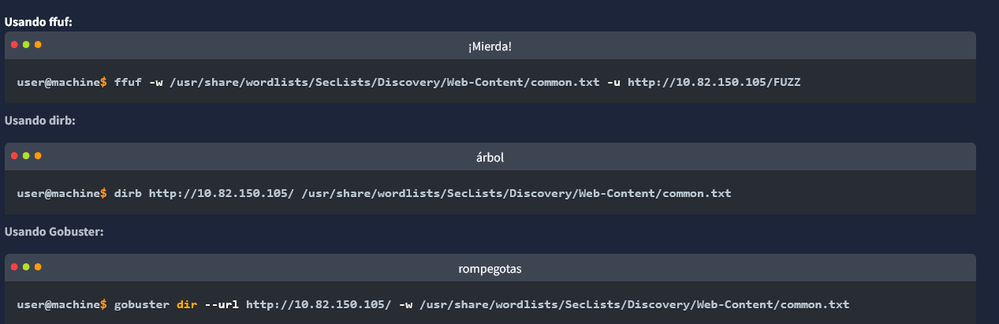
Omitir codigos de error
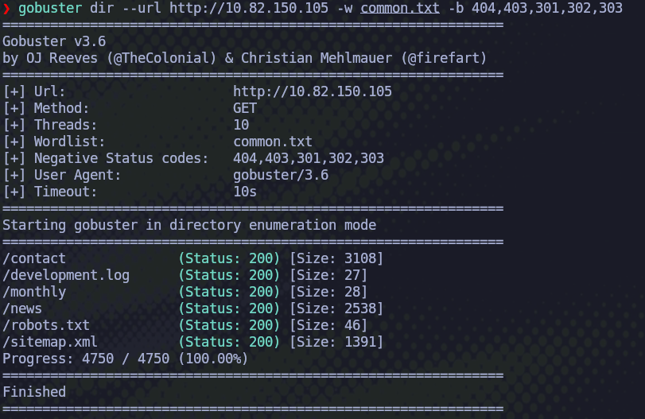